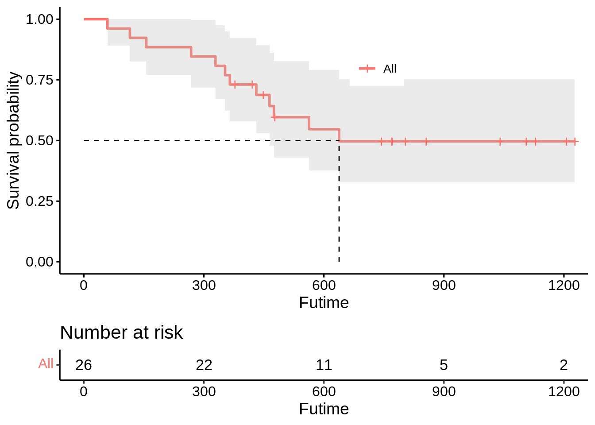

Survival Analysis Using R - Part I
What is survival analysis? KM curves and log-rank tests
Madawa Jayawardana
Introduction
Welcome! This is the part I of the workshop series on survival analysis. This will be a gentle introduction to survival analysis using
R. We’ll work through some examples to illustrate the concepts and get you going!
We’ll cover:
- Some basic R commands
- loading pacakges,
Rfunctions, plotting etc.
- loading pacakges,
- What is Survival data?
- Why we use survival analysis?
- Types of survival analysis
- Censoring in survival data
- Comparison of survival curves (Kaplan-Meier curves, log-rank test etc.)
Prerequisite: You should be familiar with basic statistical concepts (odds ratio/risk ratio interpretation, regression) and you will feel much comfortable if you are familiar with any coding language…
After completing this workshop, you should be able to:
- Obtain descriptive statistics & perform data visualisation using
R - Perform survival analysis and interpret parameter estimates
- KM curves
- Log-rank test
Workshop resources:
- we will be mainly using the
survivalbaseRpackage and thesurvminerpackage to perform all the analyses. The later package has some nice plotting capabilities using theggplot2functionality. - data: most of the time we’ll be using inbuilt data sets. If not, they will be shared before the session.
- very good readings:
- Allison, P. (2010), Survival Analysis Using the SAS System, Second Edition, SAS Institute.
- Therneau, T. M. and Grambsch, P. M. (2000), Modeling Survival Data: Extending the Cox Model, New York, USA: Springer.
- D. Hosmer and S. Lemeshow (2008), Applied Survival Analysis: Regression Modeling of Time to Event Data, Wiley.
- Klein, J. P., and Moschberger, M. L. (2003), Survival Analysis: Techniques for Censored and Truncated Data, Springer.
What, why and when?
What is survival analysis?
Survival analysis is the study of survival times (time until the event of interest). The response is often referred to as a survival time (e.g., time to death), event time (e.g., time to relapse) or failure time.
Some examples of survival data in clinical setup:
- Time to death following a treatment (e.g., cancer treatment)
- Time to relapse: time to recurrence of tumour/disease after a treatment
- Time to develop a symptom: Time to return to normal blood pressure after a treatment
[source: @KleinbaumBook](Surv.png)
Describing survival data: survival & hazard
Survival function and the hazard rate (function) are two most commonly used terms that you’ll come across when working with time-to-event data.
Survival probability: Probability of an individual survivng beyond time t.
\(S(t) = Pr(T > t)\)
Hazard probability: Rate/potential of a patient that will have the event of interest at time t (denoted by h(t)), given that the individual has survived up to time t.
\(h(t) = \lim\limits_{\Delta t \to 0} \frac{P(t\; \leq \; T < \;t \;+ \;\Delta t\;| \;T \;\geq\;t)}{\Delta t}\)
Why and when we use survival analysis?
Primary goals of survival analysis (@KleinbaumBook):
To estimate and interpret survivor and/or hazard functions from survival data.
To compare survivor and/or hazard functions.
To assess the relationship of explanatory variables to survival time.
Time-to-event data (survival data) has two important features:
- Survival times are all positive (non-negative), thus we may see naturally a skewed (either right or left) data distribution.
- Censoring: Survival times of some of the study participants are not observed.
- Event of interest did not occur before the termination of the study (study end-point)
- Participants were lost in the follow-up
- Participants withdraw from the study
In survival analysis, we assume that the censoring mechanism is independent to the survival mechanism
Censoring
The three examples above for the censoring are called right-censoring (true survival time is above a certain value/ true unobserved event is to the right of the censoring time), which is quite common in majority of the clinical studies. Right censoring occurs when a study participant leaves the study before the event of interest occurs, or the study ends before the event has occurred.
[source: @KleinbaumBook](RightCens.png)
In survival analysis, we assume that the censoring mechanism is independent to the survival mechanism
Other types of censoring:
-Left-censoring (true survival time is less than or equal to the observed time): The event-of-interest is occurred before the study end-point, but doesn’t know the exact time. For example, a study participant has the event of death before the study finishes (say at 10 months from the surgery), but the event has actually occurred before that.
-Interval-censoring (survival time is between two values): When we don’t know the exact time of event occurrence, but know that it is within a time interval.
Importance of censoring in analysis:
Failure to account for the censoring will give you biased parameter estimates about the survival times and the related quantities.
Standard methods used to analyse survival data with censored observations are valid only if the censoring is **noninformative*’**. In practical terms, this means that censoring carries no prognostic information about subsequent survival experience; in other words, those who are censored because of loss to follow-up at a given point in time should be as likely to have a subsequent event as those individuals who remain in the study. [@Clark2003_I]
A related example on censoring:
{kind=link}
Truncation
Truncation is defined as a condition which screens certain subjects so that the investigator will not be aware of their existence [@KleinBook].
-Left truncation : In left truncation, some (or all) individuals are not followed from time zero (with respect to the study time scale), but only from later entry times.
[source: @MooreBook](LeftTrunc.png)
Censoring vs Truncation
Censoring period is defined as the period the study participant is no longer under observation, but he/she may experience the event of interest.
Truncation period is defined as the period the study participant is no longer under observation, but he/she cannot experience the event of interest.
Exercise
Prostate cancer patients are given a drug or placebo. Survival time is the duration from remission to relapse. The study ends at 2 years with some patients yet to relapse. What type of censoring do you observe for these participants?
Left censoring
Interval censoring
Right censoring
Left truncation
We are interested in identifying prognostic factors for the survival of ovarian cancer patients. Only patients who have survived at least 5 years after diagnosis are included in the study. Type of censoring is
Left censoring
Interval censoring
Right censoring
Left truncation
For patients who start feeling better, the physicians decide to exclude them from the study
Right truncation
Right censoring
Informative right truncation
Informative right censoring
Describing survival data: survival & hazard
Survival probability: Probability that a patient survives from the diagnosis (time of origin) time to a specific time point t (denoted by S(t)).
Hazard probability: Probability that a patient will have the even of interest at time t (denoted by h(t)), given that the individual has survived up to time t.
Kaplan-Meier (KM) survival estimate
KM estimator (a.k.a. product limit estimator) is a non-parametric technique to estimate the survival probability from the observed survival times (Kaplan & Meier, 1958). KM method could be used to obtain survival information of a single study group or between groups. Later means, for example we want to compare the survival pattern of two groups.
We can use survival package in R to perform majority of the methods in survival analysis literature. A key function for the analysis of survival data in R is function Surv(). This is used to specify the type of survival data that we want to analyses, namely, right censored, left censored, interval censored. For our illustrations, we will only consider right censored data in this workshop.
The R object created by using this function is a survival object.
What is a survival object in
R?
We declare a survival object in R using the minimal command Surv(time, event), where
- time: follow-up time for right-censored data
- event: event indicator (usually dead/alive)
KM estimate/curve: single group study
survfit function in the survival package can be used to obtain KM estimate and to create survival curves. The first argument of the survfit function is a formula (\(Y \sim X\)), where in the left-hand side we state the type of survival data using the function Surv() and in the right-hand side grouping information are provided.
What are these
Rcodes imply?
survfit(Surv(time, event) ~ 1)survfit(Surv(time, event) ~ Treatment)
Ok… Let’s put all these into practice now! We’ll consider two examples from ovarian cancer research. One from the study that was discussed in [@Edmonson1979] and the other from Bowtell’s lab [@Alsop_2012]. Later study was discussed in the group comparison workshop.
Case studies
Study 1: Ovarian cancer study [@Edmonson1979]
We’ll be using the ovarian cancer data set provided in the survival package as the first example. This data set provides survival information in a randomised trial comparing two treatments for ovarian cancer [@Edmonson1979]. There are 6 variables in the data set. They are:
futime- Follow up time (survival time)fustat- Event of interest occurred or censoredage- Age of the study participantsresid.ds- Residual disease status (1=no, 2=yes)rx- Treatment group (two treatments)ecog.ps- Standardised ECOG performance status (1 being good and 2 for not)
Loading required R packages & functions
# Function to install&load/load required R packages
install_load <- function (package1, ...) {
packages <- c(package1, ...)
for(package in packages){
if(package %in% rownames(installed.packages()))
do.call('library', list(package))
else {
install.packages(package)
do.call("library", list(package))
}
}
}
# Required R packages
required_R_packages <- c("survival", "survminer", "tidyverse", "psych",
"readxl", "kableExtra")
# Install/load required R packages
install_load(required_R_packages)Loading data from survival package
# using the survival R package
ovarian_data <- ovarian
# Structure of your data
str(ovarian_data)'data.frame': 26 obs. of 6 variables:
$ futime : num 59 115 156 421 431 448 464 475 477 563 ...
$ fustat : num 1 1 1 0 1 0 1 1 0 1 ...
$ age : num 72.3 74.5 66.5 53.4 50.3 ...
$ resid.ds: num 2 2 2 2 2 1 2 2 2 1 ...
$ rx : num 1 1 1 2 1 1 2 2 1 2 ...
$ ecog.ps : num 1 1 2 1 1 2 2 2 1 2 ...# Facotorisation of variables
ovarian_data$rx <- factor(ovarian_data$rx, levels = c("1", "2"))
ovarian_data$resid.ds <- factor(ovarian_data$resid.ds, levels = c("1", "2"),
labels = c("No", "Yes"))
ovarian_data$ecog.ps <- factor(ovarian_data$ecog.ps, levels = c("1", "2"),
labels = c("Good", "Bad"))
# Take a look at ovarian cancer data
dplyr::glimpse(ovarian_data)Rows: 26
Columns: 6
$ futime <dbl> 59, 115, 156, 421, 431, 448, 464, 475, 477, 563, 638, 744, 76…
$ fustat <dbl> 1, 1, 1, 0, 1, 0, 1, 1, 0, 1, 1, 0, 0, 0, 0, 0, 0, 0, 0, 0, 0…
$ age <dbl> 72.3315, 74.4932, 66.4658, 53.3644, 50.3397, 56.4301, 56.9370…
$ resid.ds <fct> Yes, Yes, Yes, Yes, Yes, No, Yes, Yes, Yes, No, No, No, Yes, …
$ rx <fct> 1, 1, 1, 2, 1, 1, 2, 2, 1, 2, 1, 2, 2, 2, 1, 1, 1, 1, 2, 2, 2…
$ ecog.ps <fct> Good, Good, Bad, Good, Good, Bad, Bad, Bad, Good, Bad, Bad, G…# Function to have overlayed plots
plot_multi_histogram <- function(df, feature, label_column) {
plt <- ggplot(df, aes(x=eval(parse(text=feature)), fill=eval(parse(text=label_column)))) +
geom_histogram(alpha=0.7, position="identity", aes(y = ..density..), color="black") +
geom_density(alpha=0.7) +
labs(x=feature, y = "Density")
plt + guides(fill=guide_legend(title=label_column))
}
# Overlay plot of histogram and the densities
plot_multi_histogram(ovarian_data, 'futime', 'rx')# Descriptive statistics
describeBy(ovarian_data$futime, ovarian_data$rx, mat = T)[-c(1, 3, 8, 9, 13, 14)] %>%
kable(digits = 2) %>%
kable_styling(bootstrap_options = c("striped", "hover", "condensed"),
full_width = F,
position = "left"
)| group1 | n | mean | sd | median | min | max | range | se | |
|---|---|---|---|---|---|---|---|---|---|
| X11 | 1 | 13 | 517.31 | 346.88 | 448 | 59 | 1106 | 1047 | 96.21 |
| X12 | 2 | 13 | 681.77 | 324.68 | 563 | 353 | 1227 | 874 | 90.05 |
KM curves
# Let us convert the `Vital status` variable to a numeric variable
ovarian_data$futime <- as.numeric(ovarian_data$futime)
# KM curve: pooling both groups
KM_all <- survfit(Surv(futime, fustat) ~ 1, data = ovarian_data)
KM_allCall: survfit(formula = Surv(futime, fustat) ~ 1, data = ovarian_data)
n events median 0.95LCL 0.95UCL
[1,] 26 12 638 464 NA# Alternatively
surv_median(KM_all) strata median lower upper
1 All 638 464 NA# Obtaining KM curve
plot(KM_all)
plot(KM_all, xlab = "Futime", ylab = "Survival probability", bty ="n", lwd=2,
col = "darkblue", main = "Default plotting method", cex.main = 0.8)# Nicer plot with more information using survminer package
ggsurvplot(KM_all,
data = ovarian_data,
conf.int = T,
risk.table = T,
surv.median.line = "hv",
legend.title = "",
legend.labs = c("All"),
xlab='Futime',
legend = c(0.6,0.8)
) # Plotting the hazard function
ggsurvplot(KM_all,
conf.int = TRUE,
risk.table = TRUE,
fun = "cumhaz"
)
KM curves for both groups
# KM curves for both groups
KM_groups <- survfit(Surv(futime, fustat) ~ rx, data = ovarian_data)
KM_groupsCall: survfit(formula = Surv(futime, fustat) ~ rx, data = ovarian_data)
n events median 0.95LCL 0.95UCL
rx=1 13 7 638 268 NA
rx=2 13 5 NA 475 NA# Obtaining KM curve
plot(KM_groups, xlab = "OSDx (months)", ylab = "Survival probability", bty = "n",
col = "darkblue", main = "Default plotting method", cex.main = 0.8)
# Nicer plot with more information using survminer package
ggsurvplot(KM_groups,
data = ovarian_data,
conf.int = T,
risk.table = T,
surv.median.line = "hv",
legend.title = "",
legend.labs = c("Treatment 1", "Treatment 2"),
xlab='Futime',
legend = c(0.2,0.2)
) 
# Plotting the hazard functions
ggsurvplot(KM_groups,
conf.int = TRUE,
risk.table = TRUE,
fun = "cumhaz"
)
Study 2: Ovarian cancer study [@Alsop_2012]
We’ll consider the overall survival information in this study.
Loading data
JCO_orig <- readxl::read_excel("data/data_kathryn.xlsx", sheet = 1)
# Get a glimpse of your data
glimpse(JCO_orig)Rows: 1,001
Columns: 21
$ `Deidentified StudyID` <dbl> 1, 2, 3, 4, 5, 6, 7, 8, 9, 10, 11, 12, 13, 14…
$ AgeAtDiag <dbl> 68.14521, 54.19178, 79.96986, 53.96438, 70.50…
$ `Age Group` <dbl> 4, 3, 4, 3, 4, 1, 2, 4, 3, 2, 4, 4, 4, 4, 4, …
$ Status <chr> "D", "D", "PF", "D", "D", "P", "D", "D", "PF"…
$ PFSDx <dbl> 18.8381497, 16.0765361, 68.3499359, 10.356050…
$ OSDx <dbl> 52.2733997, 35.0461913, 68.3499359, 39.024229…
$ `Primary Site` <chr> "Ovary", "Peritoneum", "Fallopian", "Ovary", …
$ Subtype <dbl> 1, 1, 1, 1, 1, 1, 1, 1, 3, 1, 1, 1, 1, 1, 2, …
$ Description <chr> "Papillary serous adenocarcinoma (C56.9)", "P…
$ `Grade+Differentiation` <chr> "3", "3", "3", "9", "3", "1", "3", "3", "2", …
$ StageGrp <chr> "IV", "IV", "IV", "III", "III", "III", "III",…
$ race <dbl> 1, 1, 1, 5, 5, 1, 1, 1, 1, 5, 1, 1, 5, 5, 1, …
$ PrimaryPlt <dbl> 6, 6, 6, 6, NA, 6, 8, 6, 4, 8, 6, 6, 7, 1, 6,…
$ CauseDeath <chr> "1", "1", NA, "1", "2", NA, "1", "1", NA, NA,…
$ PrimaryTaxane <dbl> NA, 6, NA, 6, NA, 6, 8, 6, NA, 8, 4, 5, 4, 4,…
$ OptimalDebulking <dbl> 2, 3, 1, 2, 2, 1, 3, 1, 1, 1, 1, 1, 1, 3, 2, …
$ Time <chr> NA, NA, NA, NA, NA, NA, NA, NA, NA, NA, NA, N…
$ PF <dbl> 0, 0, 0, 0, 2, 0, 0, 0, 0, 0, 0, 1, 2, 0, 0, …
$ PFReason <chr> NA, NA, NA, NA, NA, NA, NA, NA, NA, NA, NA, "…
$ Mcancer <dbl> 0, 0, 0, 0, 4, 0, 0, 0, 5, 4, 0, 5, 5, 5, 0, …
$ `Gene mutation found in` <chr> NA, NA, NA, NA, NA, NA, NA, NA, NA, NA, NA, N…str(JCO_orig)tibble [1,001 × 21] (S3: tbl_df/tbl/data.frame)
$ Deidentified StudyID : num [1:1001] 1 2 3 4 5 6 7 8 9 10 ...
$ AgeAtDiag : num [1:1001] 68.1 54.2 80 54 70.5 ...
$ Age Group : num [1:1001] 4 3 4 3 4 1 2 4 3 2 ...
$ Status : chr [1:1001] "D" "D" "PF" "D" ...
$ PFSDx : num [1:1001] 18.838 16.077 68.35 10.356 0.756 ...
$ OSDx : num [1:1001] 52.273 35.046 68.35 39.024 0.756 ...
$ Primary Site : chr [1:1001] "Ovary" "Peritoneum" "Fallopian" "Ovary" ...
$ Subtype : num [1:1001] 1 1 1 1 1 1 1 1 3 1 ...
$ Description : chr [1:1001] "Papillary serous adenocarcinoma (C56.9)" "Papillary serous adenocarcinoma (C56.9)" "Papillary serous cystadenocarcinoma (C56.9)" "Papillary serous cystadenocarcinoma (C56.9)" ...
$ Grade+Differentiation : chr [1:1001] "3" "3" "3" "9" ...
$ StageGrp : chr [1:1001] "IV" "IV" "IV" "III" ...
$ race : num [1:1001] 1 1 1 5 5 1 1 1 1 5 ...
$ PrimaryPlt : num [1:1001] 6 6 6 6 NA 6 8 6 4 8 ...
$ CauseDeath : chr [1:1001] "1" "1" NA "1" ...
$ PrimaryTaxane : num [1:1001] NA 6 NA 6 NA 6 8 6 NA 8 ...
$ OptimalDebulking : num [1:1001] 2 3 1 2 2 1 3 1 1 1 ...
$ Time : chr [1:1001] NA NA NA NA ...
$ PF : num [1:1001] 0 0 0 0 2 0 0 0 0 0 ...
$ PFReason : chr [1:1001] NA NA NA NA ...
$ Mcancer : num [1:1001] 0 0 0 0 4 0 0 0 5 4 ...
$ Gene mutation found in: chr [1:1001] NA NA NA NA ...# Replacing NAs with "Negative"
JCO_data <- JCO_orig %>%
replace_na(list(`Gene mutation found in` = "Negative"))
# Factoring "Gene mutation found in" column
JCO_data$`Gene mutation found in` <- factor(JCO_data$`Gene mutation found in`)
# Replacing BRCA1 and BRCA2 as combined positive
JCO_data <- JCO_data %>% mutate(`Gene mutation found in` = recode(`Gene mutation found in`, "BRCA1"="Combined_positive", "BRCA2"="Combined_positive"))
# Changing the column name
names(JCO_data)[21] <- "Mutation_status"
# Filtering only combined positive and negative observations & only overall survival
JCO_final <- JCO_data %>%
filter(Mutation_status != c("UV"),
Status != c("PF"))
# Replacing D and P to 1 (dead) and 0 (alive)
JCO_final <- JCO_final %>% mutate(Status = recode(Status, "D"=1, "P"=0))
# Getting final data set
JCO_final$Mutation_status <- factor(JCO_final$Mutation_status)
JCO_final$Status <- as.numeric(JCO_final$Status) KM curves for both groups
# KM curves for both groups
KM_groups_Alsop <- survfit(Surv(OSDx, Status) ~ Mutation_status, data = JCO_final)
KM_groups_AlsopCall: survfit(formula = Surv(OSDx, Status) ~ Mutation_status, data = JCO_final)
n events median 0.95LCL 0.95UCL
Mutation_status=Combined_positive 106 76 47.9 43.3 55.2
Mutation_status=Negative 566 456 32.0 29.2 35.7table(JCO_final$Status)
0 1
140 532 # Obtaining KM curve
ggsurvplot(KM_groups_Alsop,
data = JCO_final,
conf.int = T,
risk.table = T,
surv.median.line = "hv",
legend.title = "",
legend.labs = c("Positive", "Negative"),
xlab='Futime',
legend = c(0.2,0.2)
) 
So, now we know how to obtain KM curves using R. Next obvious question is,
How can we test the observed difference in survival is statistically significant or not?
For this purpose, we could use the well established log-rank test. It is a simple test to answer the above question. What is log-rank test?
Log-rank test
Log-rank (Mantel-Haenszel) test is a non-parametric method for testing the hypothesis:
\(H_0 : distribution \; of \; survival \; times \; is \; the \; same \; for \; the \; groups\)
\(H_1 : it \; is \; not\; the \; same\)
This is a large-sample chi-square test and it provides an overall comparison of the KM curves being compared. The testing null hypothesis is that there is no overall difference between the two survival curves. Under this null hypothesis, the log–rank statistic is distributed approximately chi-square with one degree of freedom.
Note: 1. Test is only valid if the ratio between two hazards of the groups is a constant! (proportional hazards assumption)
- It places the same weight on all follow-up times
The survival package provides the function survdiff to perform log-rank tests for differences between survival curves. Syntax for this function is pretty similar to the survfit function that we used earlier.
Case study 1
survdiff(Surv(futime, fustat) ~ rx, data = ovarian_data)Call:
survdiff(formula = Surv(futime, fustat) ~ rx, data = ovarian_data)
N Observed Expected (O-E)^2/E (O-E)^2/V
rx=1 13 7 5.23 0.596 1.06
rx=2 13 5 6.77 0.461 1.06
Chisq= 1.1 on 1 degrees of freedom, p= 0.3 We obtain a non-significant difference in the survival curves between the two treatment groups.
Case study 2
survdiff(Surv(OSDx, Status) ~ Mutation_status, data = JCO_final)Call:
survdiff(formula = Surv(OSDx, Status) ~ Mutation_status, data = JCO_final)
N Observed Expected (O-E)^2/E (O-E)^2/V
Mutation_status=Combined_positive 106 76 110 10.74 13.6
Mutation_status=Negative 566 456 422 2.81 13.6
Chisq= 13.6 on 1 degrees of freedom, p= 2e-04 We obtain a highly significant difference in the survival curves between BRCA1/2 positive and negative groups.
Weighted Log-rank tests
Weighted Log-rank tests are useful when the standard assumptions of the general Log-rank test are violated.
Peto and Peto modified Gehan-Wilcoxon test
This is a version of Log-rank test that sits broadly under the G-rho family of Harrington and Fleming tests ([@Harrington1982]). It is a good alternative to consider when:
hazard functions are not proportional
better when you have more event times earlier
The Peto & Peto modified Gehan-Wilcoxon test is again computed using function survdiff(); however, we need to set argument rho to 1.
survdiff(Surv(futime, fustat) ~ rx, rho = 1, data = ovarian_data)Call:
survdiff(formula = Surv(futime, fustat) ~ rx, data = ovarian_data,
rho = 1)
N Observed Expected (O-E)^2/E (O-E)^2/V
rx=1 13 5.89 4.12 0.761 1.68
rx=2 13 3.50 5.27 0.595 1.68
Chisq= 1.7 on 1 degrees of freedom, p= 0.2 Similar conclusion as earlier.
Which of the 2 tests should be preferred?
if survival curves cross, both tests are not optimal
check if the prportional hazard assumptions is seriously violated (hint: use proportional hazards plot)
Log-rank test is the most powerful test when proportionality assumption is valid
otherwise use the weighted method
Stratified log-rank test
Stratified log-rank test is an extension of the log-rank test to incorporate controlling variable(s) to test the effective difference between survival curves of the the variable of interest. For example, let us assume that we have two treatment groups (A & B) and we want to control for gender (male & female). We may use stratified log-rank test in this case to assess the significance of the survival curves of the two treatment groups controlling for the variable gender. Thus, it provides a method of testing the equivalence of survival curves controlling for the stratified variable [@KleinBook].
Performing stratified log-rank test
# Obtaining survival curves
KM_strata <- survfit(Surv(OSDx, Status) ~ Mutation_status + strata(Subtype), data = JCO_final)
#KM_strata
# Plotting KM survival curves
ggsurvplot(KM_strata, data = JCO_final)# Stratified log-rank test
survdiff(Surv(OSDx, Status) ~ Mutation_status + strata(Subtype), data = JCO_final)Call:
survdiff(formula = Surv(OSDx, Status) ~ Mutation_status + strata(Subtype),
data = JCO_final)
N Observed Expected (O-E)^2/E (O-E)^2/V
Mutation_status=Combined_positive 106 76 107 8.80 11.4
Mutation_status=Negative 566 456 425 2.21 11.4
Chisq= 11.4 on 1 degrees of freedom, p= 7e-04 The test results indicate that even after adjusting for the possible confounding variable Subtype, there is a statistically significant difference between the survival curves of the two groups.
Exercise
Consider the variable resid.ds (residual disease) in the ovarian data set (case study 1) when answering the following questions.
- Draw KM curves. Comment on the survival patterns of the two groups (residual disease Yes vs. No).
- Is there a significant difference between the survival curves?
- Perform a stratified log-rank test to assess the survivor relationship between
resid.dsand survival times controlling for the variableagegrp. Comment on the results.
Session Information
sessionInfo()## R version 4.1.2 (2021-11-01)
## Platform: x86_64-pc-linux-gnu (64-bit)
## Running under: Ubuntu 20.04.3 LTS
##
## Matrix products: default
## BLAS: /usr/lib/x86_64-linux-gnu/blas/libblas.so.3.9.0
## LAPACK: /usr/lib/x86_64-linux-gnu/lapack/liblapack.so.3.9.0
##
## locale:
## [1] LC_CTYPE=C.UTF-8 LC_NUMERIC=C LC_TIME=C.UTF-8
## [4] LC_COLLATE=C.UTF-8 LC_MONETARY=C.UTF-8 LC_MESSAGES=C.UTF-8
## [7] LC_PAPER=C.UTF-8 LC_NAME=C LC_ADDRESS=C
## [10] LC_TELEPHONE=C LC_MEASUREMENT=C.UTF-8 LC_IDENTIFICATION=C
##
## attached base packages:
## [1] stats graphics grDevices utils datasets methods base
##
## other attached packages:
## [1] readxl_1.3.1 psych_2.1.9 forcats_0.5.1 stringr_1.4.0
## [5] dplyr_1.0.7 purrr_0.3.4 readr_2.1.2 tidyr_1.2.0
## [9] tibble_3.1.6 tidyverse_1.3.1 survminer_0.4.9 ggpubr_0.4.0
## [13] ggplot2_3.3.5 survival_3.2-13 kableExtra_1.3.4
##
## loaded via a namespace (and not attached):
## [1] httr_1.4.2 jsonlite_1.7.3 viridisLite_0.4.0 splines_4.1.2
## [5] tmvnsim_1.0-2 carData_3.0-5 modelr_0.1.8 assertthat_0.2.1
## [9] highr_0.9 cellranger_1.1.0 yaml_2.2.2 pillar_1.7.0
## [13] backports_1.4.1 lattice_0.20-45 glue_1.6.1 digest_0.6.29
## [17] gridtext_0.1.4 ggsignif_0.6.3 rvest_1.0.2 colorspace_2.0-2
## [21] htmltools_0.5.2 Matrix_1.3-4 pkgconfig_2.0.3 broom_0.7.12
## [25] haven_2.4.3 xtable_1.8-4 scales_1.1.1 webshot_0.5.2
## [29] svglite_2.1.0 km.ci_0.5-2 KMsurv_0.1-5 tzdb_0.2.0
## [33] farver_2.1.0 generics_0.1.2 car_3.0-12 ellipsis_0.3.2
## [37] withr_2.4.3 mnormt_2.0.2 cli_3.1.1 magrittr_2.0.2
## [41] crayon_1.4.2 ggtext_0.1.1 evaluate_0.14 fs_1.5.2
## [45] fansi_1.0.2 nlme_3.1-153 rstatix_0.7.0 xml2_1.3.3
## [49] tools_4.1.2 data.table_1.14.2 hms_1.1.1 lifecycle_1.0.1
## [53] munsell_0.5.0 reprex_2.0.1 compiler_4.1.2 jquerylib_0.1.4
## [57] systemfonts_1.0.3 rlang_1.0.1 grid_4.1.2 rstudioapi_0.13
## [61] labeling_0.4.2 rmarkdown_2.11 gtable_0.3.0 abind_1.4-5
## [65] DBI_1.1.2 markdown_1.1 R6_2.5.1 gridExtra_2.3
## [69] zoo_1.8-9 lubridate_1.8.0 knitr_1.37 fastmap_1.1.0
## [73] survMisc_0.5.5 utf8_1.2.2 stringi_1.7.6 parallel_4.1.2
## [77] Rcpp_1.0.8 vctrs_0.3.8 dbplyr_2.1.1 tidyselect_1.1.1
## [81] xfun_0.29